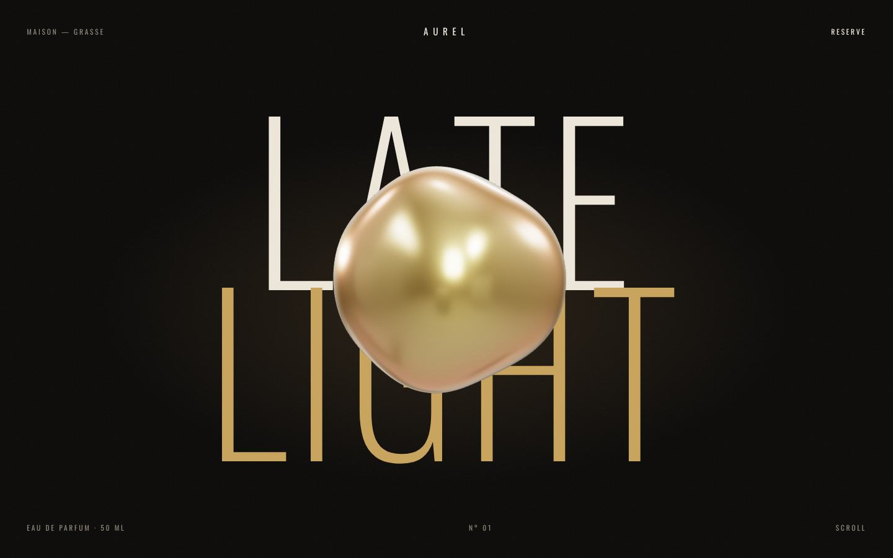
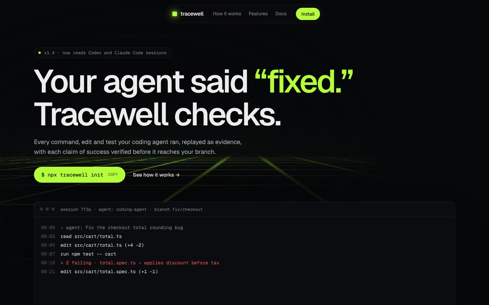
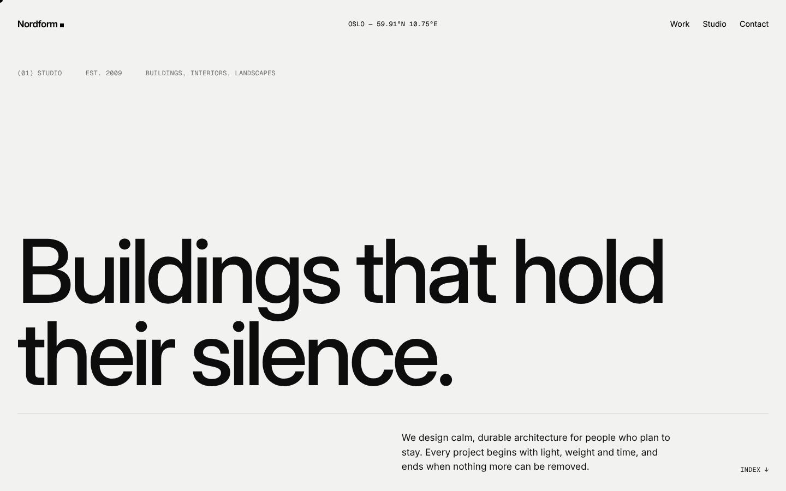

- Brand
- Aurel, fragrance house
- First feeling
- desire + awe
- Direction
- Cinematic Luxury + Immersive 3D
- Motion
- cinematic · expo.inOut · 1.4s
- Assets
- C, procedural: Three.js sculpture
- Hero
- immersive WebGL
- Signature
- a gold sculpture turns in front of a giant title
Open-source agent skill · v0.4 · MIT
Claude Code · Codex · Cursor · any SKILL.md agent
Websites with a point of view.
Your coding agent can write code. It can't art-direct. Site Director gives it a studio's whole process: an interview, a creative brief, a tested motion & 3D library, and a quality gate that rejects the default AI look.
Your brand
Swiss Precision
Make it unforgettable.
Start a project
(01) The problem
Ask an agent for a website and you get the same page everyone gets.
- 01Purple-to-blue gradient heroThe colour scheme of every AI demo.
- 02Centred headline, subline, one buttonStacked in the middle, nothing to look at.
- 03Three identical icon cardsSame size, same icon circle, same three lines.
- 04Invented social proof"Trusted by 10,000+ teams." By whom?
- 05Fade-up on everythingOne animation, applied to every element.
Supercharge your workflow with AIGet started
Trusted by 10,000+ teams worldwide
Site Director's quality gate checks for all five, and the build doesn't ship until they're gone.
(02) The process
Four answers in. A creative brief out.
- What is it, and who is it for?
- A fragrance house. People who buy scent as art.
- What should visitors feel in 3 seconds?
- Desire. And a little awe.
- Three words for its personality?
- Slow, golden, intimate.
- What visuals do you have?
- Nothing yet. Make them in code.
- 01Interview
- 02Brief
- 03Build
- 04Check
- 05Remember
(03) Demos
Same skill. Three different worlds.
Each one produced by following the skill, brief first. Fictional brands, real code.
01 / 03Cinematic Luxury + Immersive 3D
Aurel
A liquid-gold sculpture turns in front of a giant title as you scroll.
- Feeling: desire + awe
- Oswald 200 · +5% tracking
- Three.js r187
- Preloader

02 / 03Dark Signal
Tracewell
An agent session replays, and its false "fixed" claim gets caught.
- Feeling: trust + energy
- Geist 560 · −4.5%
- WebGL grid shader
- Pinned chapters

03 / 03Swiss Precision
Nordform
A project index where a drawn building follows your cursor.
- Feeling: trust + exclusivity
- Inter Display · −4.5%
- Procedural SVG art
- Hover preview

(04) Recipe playground
Hover. Every tile is a recipe your agent gets.
20+ tested effects, driven by plain HTML attributes. Each one respects reduced motion and switches off on touch where it should.
data-reveal="lines"
Lines rise out of a mask, one by one.
data-clip="iris"
data-magnetic="0.5"
data-scramble
SIGNAL ACQUIRED
data-hover-preview
- Aurel 3D
- Tracewell Signal
- Nordform Swiss
- Aurel notes Scroll
data-count="1280"
1,280
class="sd-trace"
A light runs the border. Pure CSS.
data-kinetic
Scroll fast. I lean.
(05) The data
Built on measurements, not vibes.
We opened 17 award-winning sites from Awwwards, Godly, Dark.design, Land-book and MaxiBestOf in a real browser and measured what they actually do. Each dot is one site. Hover it to see which.
Headline letter-spacing
Tight for tech and studios, wide only for condensed luxury caps.
First measurement pass, November 2026. GSAP is counted only where it was detectable, so the real share is likely higher. Full method in knowledge/reference-analysis.md.
Swiss Precision✳Cinematic Luxury✳Dark Signal✳Editorial Serif✳Immersive Spatial✳Kinetic Type✳Soft Tech Minimal✳Brutalist Raw✳Retro Terminal✳Organic Warm✳
Stop shipping the default.
$ git clone https://github.com/mdashfaqh14/site-director \
.claude/skills/site-director
# then ask your agent:
› Use site-director to build a website for my studio.- 1Clone into your agent's skills folder.
- 2Ask for a website. Answer four questions.
- 3Approve the brief. Watch it build, check and remember.